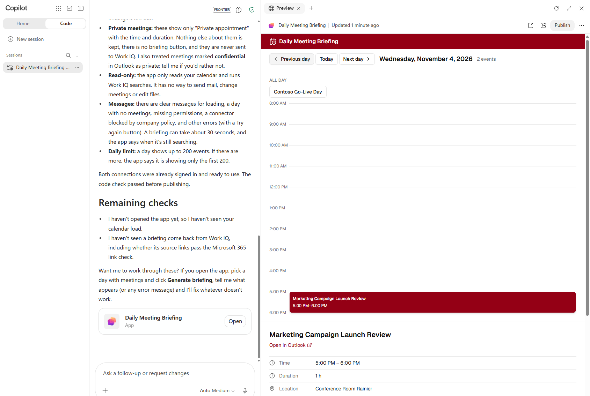
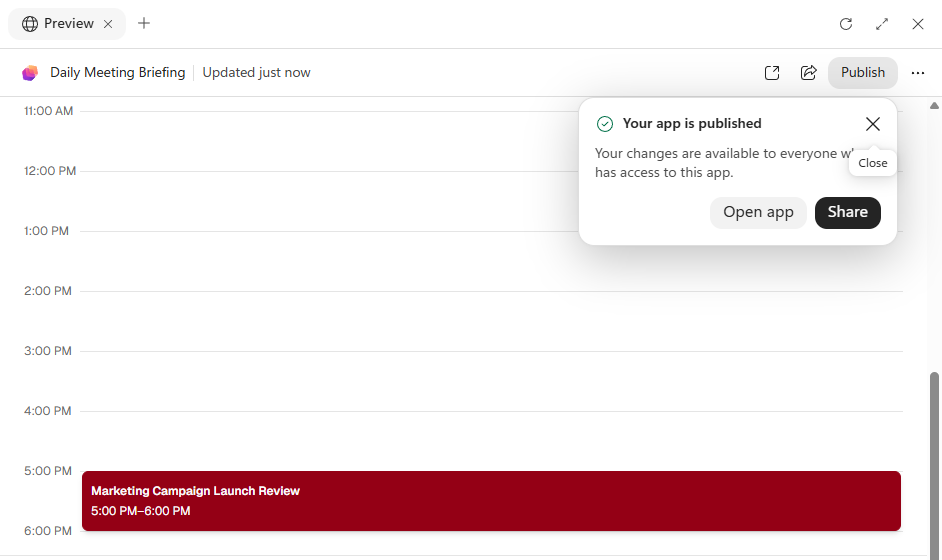
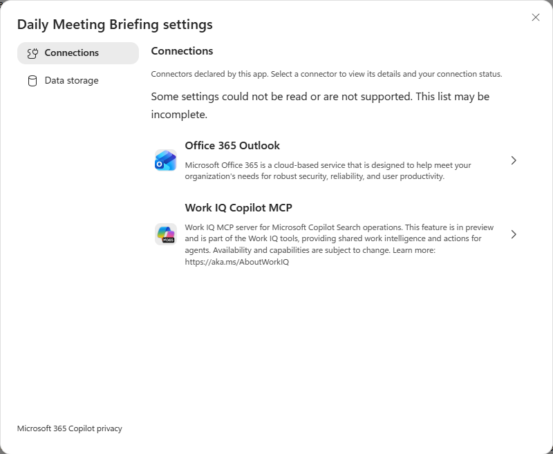
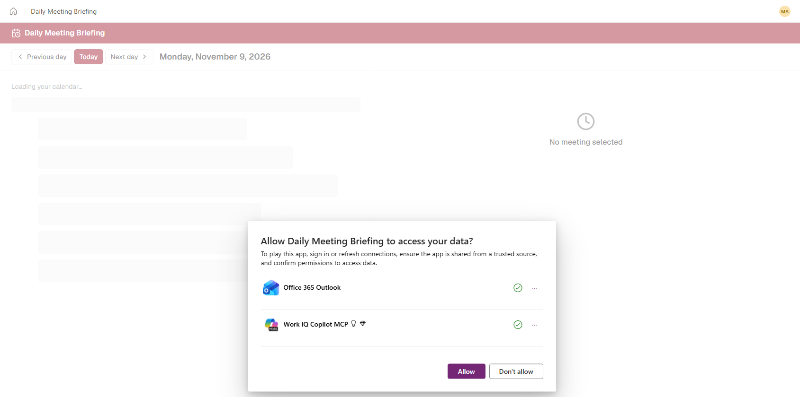

Monday
9:50
Today
Orion launch week
9 AM
10 AM
11 AM
12 PM
1 PM
2 PM
Go/no-go review10:00 – 11:00
Orion pricing sync10:30 – 11:15
EmailOrion launch: decision on launch date
Teams chatFinance has not confirmed the 60/40 budget split yet.
DocumentOrion launch plan






Then the admins take over
Billing policy
Connector and action rules
Sharing rules
One prompt.
A governed app your team can open.
Copilot Managed Runtime lab · Exercise 1